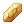
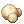

Cast Time
Cast Time is the time it takes to perform many skills. This is denoted with an empty black bar that appears above a unit's head, which fills green over time. Cast time is always an important consideration when deciding on builds, whether that be stats, skill choice and/or equipment options. The normal unit of measurement is seconds.
Cast time in Renewal is split into two parts: Variable Cast Time (VCT) and Fixed Cast Time (FCT). Skills normally have a mixture of both, but can sometimes have only fixed cast time or only variable cast time.
Variable Cast Time
Variable cast time is extremely flexible, having several options for modification. The general formula is:
Final VCT = Skill VCT × ( Stat Reduction ) × ( 1 - [ Sum of Percentage VCT Decreases ] ) seconds Stat Reduction = 1 − SQRT ( [ DEX × 2 + INT ] ÷ 530 )
For stats based reductions, if your stats fulfills the following formula, your skills will have no variable cast time:
DEX × 2 + INT >= 530
Notably, you can attain 0 VCT either by stats alone or percentage reductions alone, but not in some combination of the two due to the nature of the VCT formula.
Example: A player casts a 10s variable cast time skill with 160 INT and 160 DEX, while wearing gears with a total of -90% VCT.
- Stat Reduction = 1 - SQRT ( [ 160 × 2 + 160 ] ÷ 530 ) ≈ 0.048
- Final VCT = 10s × 0.048 × ( 1 - 0.90 ) = 0.048s
Available items in NovaRO to reduce VCT:
 +9 Crown Of Deceit [1] (from Cash Shop) with
+9 Crown Of Deceit [1] (from Cash Shop) with  Kathryne Keyron Card: 29% reduction
Kathryne Keyron Card: 29% reduction- Spell enchants (from Malangdo Enchants, Old Glast Heim instances): 10% reduction each
 +9 Vellum Arc Wand: 50% reduction (in WoE/PvP)
+9 Vellum Arc Wand: 50% reduction (in WoE/PvP) +9 Ferlock's Cloack [1] (from Airship Assault): 30% reduction
+9 Ferlock's Cloack [1] (from Airship Assault): 30% reduction
Available effects to reduce VCT:
Fixed Cast Time
Fixed cast time is much more rigid than VCT, being totally unaffected by stats. The formula for FCT is as follows:
Final FCT = ( Skill FCT - [ Sum of Flat FCT Mods] ) × ( 1 - [ Max of Percentage FCT Decrease ] + [ Max of Percentage FCT Increase ] )
Players should note percentage based reduction effects do not stack no matter the source. If a player is under multiple FCT percentage reduction effects, only the highest value will take effect.
- Example 1: A player has two
 Buwaya Agimat Tattoos equipped. Their FCT would be reduced by 7%, not 14%, as it does not stack (but they would get MATK +14% as expected).
Buwaya Agimat Tattoos equipped. Their FCT would be reduced by 7%, not 14%, as it does not stack (but they would get MATK +14% as expected). - Example 2: A player has one Buwaya Agimat Tattoo equipped and is under the effect of
 Lv5 Sacrament. As Sacrament's bonus of 50% reduction is the larger bonus compared to Buwaya's 7%, the player has their FCT reduced by 50%.
Lv5 Sacrament. As Sacrament's bonus of 50% reduction is the larger bonus compared to Buwaya's 7%, the player has their FCT reduced by 50%. - Example 3: A player has a headgear compounded with
 Fenrir Card equipped and then has Lv5 Sacrament cast upon them. As Sacrament's bonus of 50% is less than Fenrir's 70%, Sacrament does nothing, and the player's FCT reduction remains at 70%.
Fenrir Card equipped and then has Lv5 Sacrament cast upon them. As Sacrament's bonus of 50% is less than Fenrir's 70%, Sacrament does nothing, and the player's FCT reduction remains at 70%.
However, flat reductions (eg,  Temporal DEX Boots 0.5s FCT reduction) DO stack with other flat reduction effects. Stacking flat reductions is the only possible way of removing a skill's fixed cast time because there exists no single source of 100% FCT reduction. The only exception are the Oboro / Kagerou classes, who have the skill
Temporal DEX Boots 0.5s FCT reduction) DO stack with other flat reduction effects. Stacking flat reductions is the only possible way of removing a skill's fixed cast time because there exists no single source of 100% FCT reduction. The only exception are the Oboro / Kagerou classes, who have the skill  16th Night which removes fixed cast time entirely.
16th Night which removes fixed cast time entirely.
Available items in NovaRO to reduce FCT:
| Item | Item Type | Classes | FCT Reduction Type | Value |
|---|---|---|---|---|
 Spell Circuit (GC) [1] Spell Circuit (GC) [1]
|
Upper Headgear | All | Flat | -0.1s per refine level above 10, up to 15 (disabled in PvP/BG/WoE) |
 Spell Circuit (EVT) [1] Spell Circuit (EVT) [1]
|
Upper Headgear | All | Flat | -0.1s per refine level above 10, up to 15 (disabled in PvP/BG/WoE) |
 Amistr Beret (GC) [1] Amistr Beret (GC) [1]
|
Upper Headgear | All | Flat | -0.1s per refine level above 10, up to 15 (disabled in PvP/BG/WoE) |
 Amistr Beret (EVT) [1] Amistr Beret (EVT) [1]
|
Upper Headgear | All | Flat | -0.1s per refine level above 10, up to 15 (disabled in PvP/BG/WoE) |
 Zaha Doll Hat [1] Zaha Doll Hat [1]
|
Upper Headgear | All | Flat | -0.08s per refine level (chance when dealing / receiving magic damage) |
 Chung Cap [GC][1] Chung Cap [GC][1]
|
Upper Headgear | All | Flat |
[Refine >= 11]
|
 Chung Cap [EVT][1] Chung Cap [EVT][1]
|
Upper Headgear | All | Flat |
[Refine >= 11]
|
 Antiquity Cap [GC][1] Antiquity Cap [GC][1]
|
Upper Headgear | All | Flat |
[Refine >= 11]
|
 Antiquity Cap [EVT][1] Antiquity Cap [EVT][1]
|
Upper Headgear | All | Flat |
[Refine >= 11]
|
 Stripe Cap [GC][1] Stripe Cap [GC][1]
|
Upper Headgear | All | Flat |
[Refine >= 11]
|
 Stripe Cap [EVT][1] Stripe Cap [EVT][1]
|
Upper Headgear | All | Flat |
[Refine >= 11]
|
 Clark Sidecap [GC][1] Clark Sidecap [GC][1]
|
Upper Headgear | All | Flat |
[Refine >= 11]
|
 Clark Sidecap [EVT][1] Clark Sidecap [EVT][1]
|
Upper Headgear | All | Flat |
[Refine >= 11]
|
 Ceremonial Crown [GC][1] Ceremonial Crown [GC][1]
|
Upper Headgear | All | Flat |
[Refine >= 11]
|
 Ceremonial Crown [EVT][1] Ceremonial Crown [EVT][1]
|
Upper Headgear | All | Flat |
[Refine >= 11]
|
 Celestial Coronet [GC][1] Celestial Coronet [GC][1]
|
Upper Headgear | All | Flat |
[Refine >= 11]
|
 Celestial Coronet [EVT][1] Celestial Coronet [EVT][1]
|
Upper Headgear | All | Flat |
[Refine >= 11]
|
 Red Coronet [GC][1] Red Coronet [GC][1]
|
Upper Headgear | All | Flat |
[Refine >= 11]
|
 Red Coronet [EVT][1] Red Coronet [EVT][1]
|
Upper Headgear | All | Flat |
[Refine >= 11]
|
| Footwear | 3rd Job, Kagerou / Oboro, Rebel | Flat | -0.5s (when base DEX >= 120) | |
 Vellum Arc Wand Vellum Arc Wand
|
Weapon - Two-Handed Staff | Mage / Acolyte / Soul Linker | Flat | -0.2s (when at +9 refine level) |
| Laphine Staff | Weapon - One-Handed Staff | Transcendent Mage / Transcendent Acolyte | Percentage | -1% per refine level |
 Puente Robe Puente Robe
|
Armour | All | Percentage | -3% |
 Buwaya Agimat Tattoo Buwaya Agimat Tattoo
|
Accessory | All | Percentage | -7% |
 Doram Suit [1] Doram Suit [1]
|
Set Combo | Summoner | Percentage | -15% and additional -1% per refine level of each component |
| Luxurious Doram Suit [1] | Set Combo | Summoner | Percentage | -20% and additional -1% per refine level of each component |
 Elegant Doram Suit [1] Elegant Doram Suit [1]
|
Set Combo | Summoner | Percentage | -25% and additional -1% per refine level of each component |
 Safety Pendant B [1] Safety Pendant B [1]
Any Safety Epaulet Any Einbech Weapon |
Set Combo | All | Flat | -Reduces fixed casting time by 0.3 seconds |
 Rata Card Rata Card
|
Headgear Card | All | Percentage | -50% (chance when dealing magic damage) |
 Nidhoggur Shadow Card Nidhoggur Shadow Card
|
MVP Headgear Card | High Wizard and up | Percentage | -50% |
 Fenrir Card Fenrir Card
|
MVP Headgear Card | All | Percentage | -70% |


Available enchants in NovaRO to reduce FCT:
| Enchant | Equipment Possible | FCT Reduction Type | Value |
|---|---|---|---|
 Special STR Special STR
 Special AGI  Special LUK |
 Giant Snake Skin Giant Snake Skin
|
Percentage | -7% (when at +12 refine level) |
 MATK1Lv MATK1Lv
|
Malangdo Enchants | Percentage | -1% |
 MATK2Lv MATK2Lv
|
Malangdo Enchants | Percentage | -1% |
 MATK3Lv MATK3Lv
|
Malangdo Enchants | Percentage | -1% |
 Modification Module (Fixed Casting) Modification Module (Fixed Casting)
|
 Illusion Leg A-type Illusion Leg A-type Illusion Leg B-type Illusion Leg B-type
|
Flat |
Reduces fixed casting time by 0.3 seconds. [Refine >= 7]
[Refine >= 9]
|
 Automatic Module (Fixed Casting) Automatic Module (Fixed Casting)
|
Illusion Leg A-type Illusion Leg B-type
|
Flat |
Reduces fixed casting time by 0.1 seconds. [Refine >= 9]
[Refine >= 11]
|


Available skills to reduce FCT:
| Skill | Class | FCT Reduction Type | Value |
|---|---|---|---|
 Radius Radius
|
Warlock | Percentage | -10% / -15% / -20% (Warlock skills only) |
 Dances With Wargs Dances With Wargs
|
Wanderer / Minstrel | Percentage | -10% per Wanderer or Minstrel in the party, up to -70% |
| Sacrament
|
Arch-Bishop | Percentage | -10% / -20% / -30% / -40% / -50% |
 Heat Barrel Heat Barrel
|
Rebellion | Percentage | -5% / -10% / -15% / -20% / -25% |
| 16th Night
|
Oboro / Kagerou | Percentage | -100% |
Available effects that increase FCT:
| Name | FCT Increase Type | Value |
|---|---|---|
| Freezing | Percentage | +50% |
 Howling of Mandragora Howling of Mandragora
|
Flat | +0.5s / +1.0s / +1.5s / +2.0s / +2.5s |